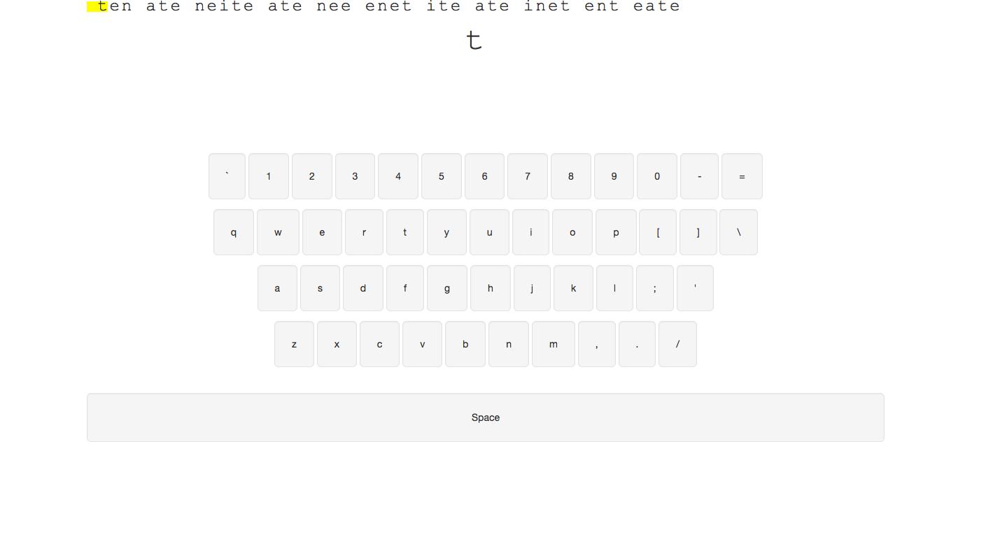
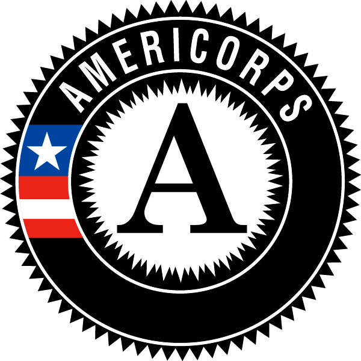
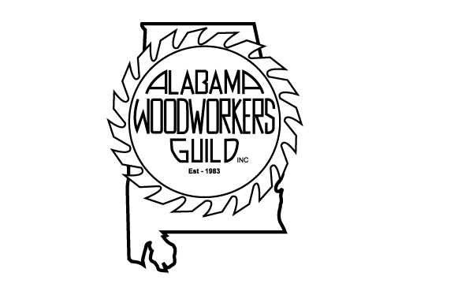
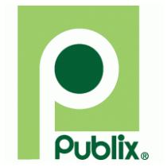

I loved serving in AmeriCorps. I primarily tutored K-5 students in reading.
I graduated from the Depot/U Front End Developer program. It was awesome!
I earned my B.S. in psychology from NSU. I "minored" in philosophy. I say "minored" because I had more credit hours in my minor than my major when I graduated.
I worked for Birmingham City Schools after my time with AmeriCorps. I was an instructional aid for students with disabilities.
I served on the board of directors of the Alabama Woodworkers Guild, as newsletter editor, and as a shop supervisor.
I took philosophy classes at the Louisiana Scholars College, the state's only designated honors college.
I earned my M.B.A. from the University of Phoenix where I got to work with people all over the country.
I worked for Publix as a Deli Clerk and Grocery Clerk earning several promotions, raises, and forming lasting relationships with the teams I worked with.
